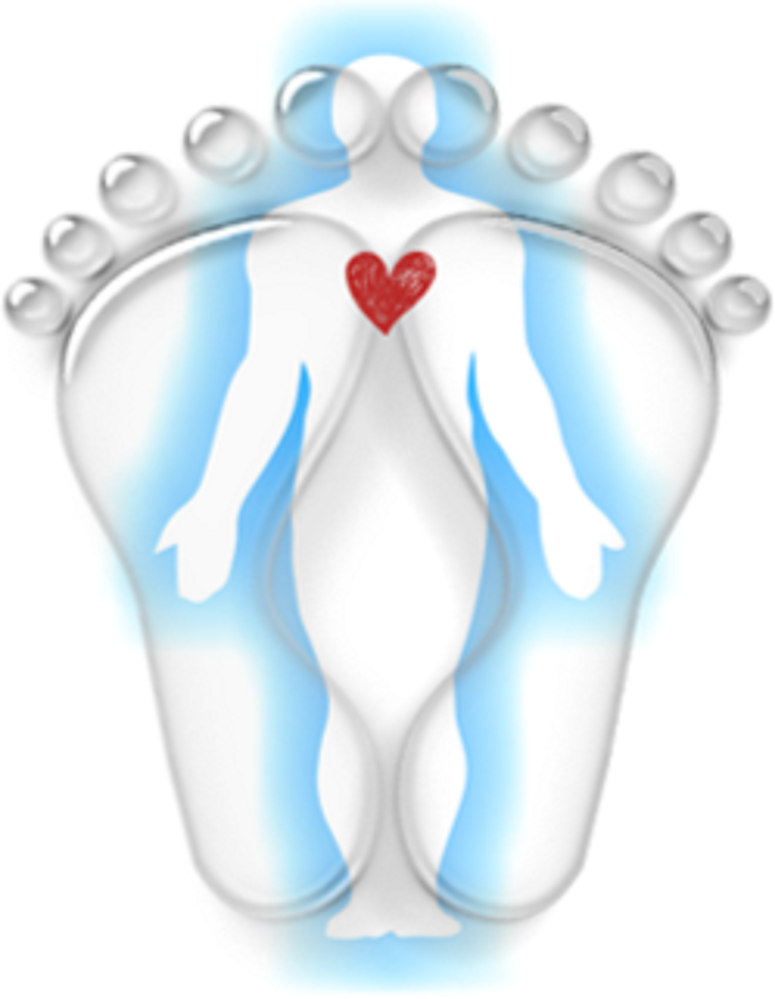

Kim Davis offers holistic duopody reflexology to support clients across Llantwit, Cowbridge, Cardiff, Barry and Bridgend — easing stress, sleep issues, digestion, hormone imbalances and more.
APPOINTMENT ONLY — MON–FRI, 9:30AM–3PM

Reflexology is an ancient holistic therapy that promotes deep relaxation and helps restore your body's natural balance. If you have a specific health concern in mind, a free discovery call is a gentle way to explore how reflexology could help.
"Duo" means two, "pody" means feet. Duopody reflexology treats both feet at the same time — each system in the body is reflected in the feet, and each foot can also represent pairs in life, such as past and present. Hover or tap a point on the map to see what it relates to.
The tips of the toes mirror the head, brain and sinuses — a common area of focus for tension headaches and migraines.
“Kim is the best thing in my diary each month. I don't know how she works her magic, but she does.”
Joanna Maguire“My son totally trusts Kim, and I can't thank her enough for helping him. Highly recommend her!!”
Michelle Rowland, Llantwit“I always feel calm and rejuvenated following each treatment.”
Barbara Hodges, Llanmaes— World Health Organisation
Book Your Appointment